Topics I will discuss in this post is a follows.
- Overview
- Specification and Parameters
- List of Channel Power that does not change dynamically
- R99 Downlink Power Control
- R99 Uplink Power Control
- Downlink Power Control in HSPA
- Uplink Power Control in HSPA
If you are totally new to this topic, I recommend you to read "Overview" section of LTE Power Control page first.
One thing I want to add in this section is that power of most of the channels changes very dynamically throughout the call setup and data communication.
Following is one example showing the power of each of Uplink physical channels for HSUPA. Again this is only one example and detailed power profile would vary depending on data rate and parameter settings related to power control.
Focusing on the stage where packet communication occurs, you will see various physical channels and the channel power changes dynamically. This is the power changes for the communication using the network simulator with direct RF connector (by RF cable), so the range of power change is not so huge but if you collect the same data in live network you would see more dynamic changes and if it is while you are moving around a cell, you would see even more dynamic changes.
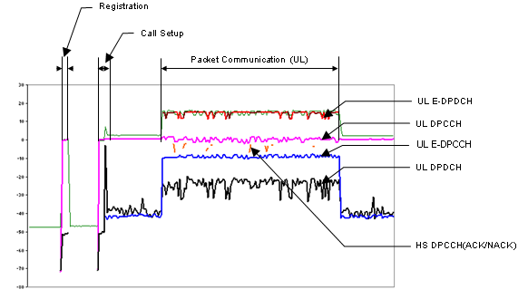
The result shown above is shows the power changes of each channels along the timeline. There is another common way of showing the power changes is to show the power in code domain as shown below.
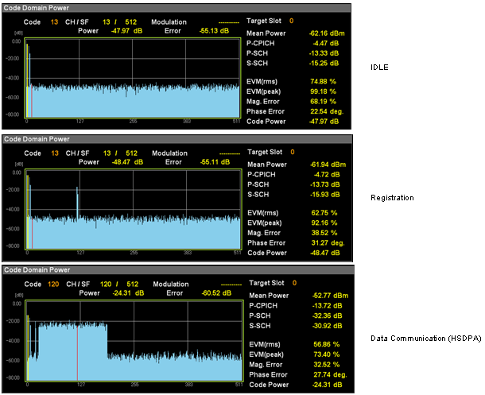
Before you jump into the detailed power control process, I would give you a list of questions to which you have to find answer (on your own -:)
i) Why each of the channel power should changes like this ?
ii) There are many channels, each of the channel power is controlled separately ? or there is a master (reference channel) being directly controled and all the other channels changes according to the master channel ?
iii) How often this kind of power control (power changes) happens ? (every 1 seconds? every 1 ms seconds ? every frame ? every slot ?)
If you pick up any books about mobile communication, there would be at least one section or chapter dealing with the power control process and in many cases you will see a lot of parameters (e.g, Beta c, Beta d, Beta hs etc) without being explained. In fact, it is not easy to explain those parameters in simple/clear way. So I would just give you some reference points of those parameters which is critical to power control process.
Whenever you come across any power control parameters from textbook or internet, you can use this section as a quick reference for those parameters.
25.213 - 4.2.1.1 DPCCH/DPDCH
25.213 - 4.2.1.2 HS-DPCCH
25.213 - 4.2.1.3 E-DPDCH/E-DPCCH
25.213 - 4.2.2.2 PRACH message part
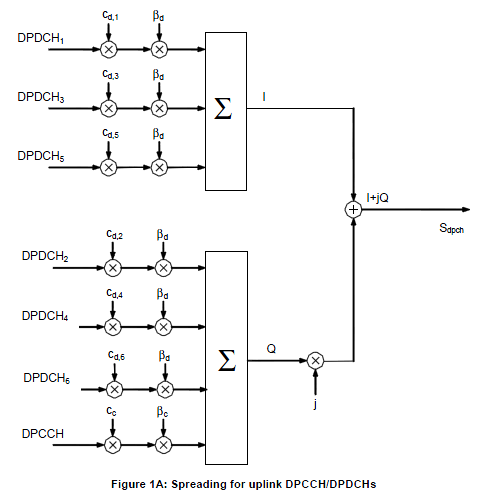
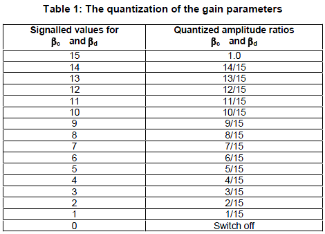
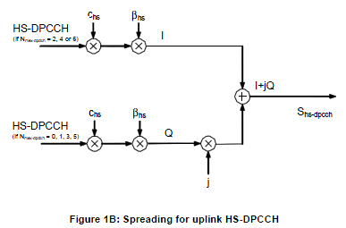
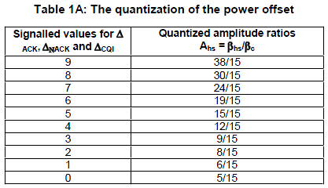
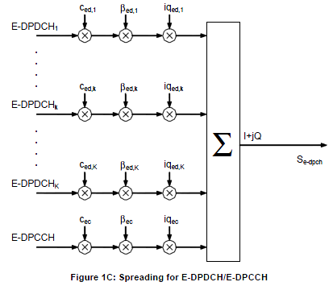
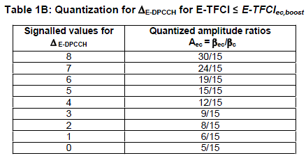
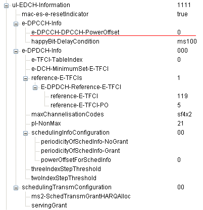
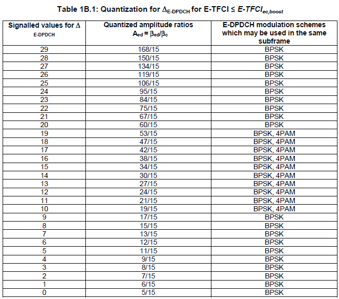
Table 1B.2: Quantization for βed,k/βc for E-TFCI ≤ E-TFCIec,boost
Table 1B.2A: Quantization for ΔE-DPDCH for E-TFCI > E-TFCIec,boost
Table 1B.2B: Quantization for βed,k/β c for E-TFCI > E-TFCIec,boost
Table 1B.3: HARQ offset Δharq
List of Channel Power that does not change
There are a set of channels, the power of which is normally fixed during the cell planning and does not change dynamically. It means that these channels are not the target of power control, but I thought I'd better make list of these because they are still a part of total channel power.
|
Channel |
Main Function |
| PCPICH (Primary Common Pilot Channel) | Carries Common Pilot that all UE uses as a reference power of a cell |
| P-SCH(Primary Sync Channel) | Carries the primary synchronization code |
| S-SCH(Secondary Sync Channel) | Carries the secondary synchronization code |
| AICH (Aquisition Indicator Channel) | Carries the Aquisision Indicator which is a response for PRACH Preamble |
| PICH (Paging Indicator Channel) | Carries Paging Indicator |
| P-CCPCH (Primary Common Control Physical Channel) | Carries BCH (Broadcast Channel) data |
|
S-CCPCH(Secondary Common Control Physical Channel) |
Carries FACH or PCH data |
"Downlink Power Control" means "change of downlink power based on TPC command carried by uplink control channel(UL DPCCH)".
Overall Procedure is as follows :
i) UE measures DL DPCCH SIR at each slot which is 10/15 ms, 0.667ms.
ii) It compares the measured SIR with the specified SIR target.
iii) If the measured SIR is greater than the target SIR, UE put the TPC command 0 into TPC field of UL DPCCH which tells Network to decrease the downlink power.
iv) If the measured SIR is poorer than the target SIR, UE put the TPC command 1 into TPC field of UL DPCCH which tells Network to increase the downlink power.
"Uplink Power Control" means "change of uplink power based on TPC command carried by downlink control channel(DL DPCCH)". As you see in the figures below, both downlink DPCCH and uplink DPCCH slot has a special field called 'TPC (Transmission Power Control)' field.
Since every slot has this field, you may easily infer that the power control in R99 would happen once in every slot (10/15 ms).

Overall Uplink Power control Procedure is as follows.
i) Network detect and evaluate uplink transmission power at each slot.
ii) Compare the measured power with the specified SIR target.
iii) If the measured power is less than SIR target, Network put a "Power Up" command in TPC field on downlink DPCCH and the measured power is much higher than SIR target, Network may put a "Power Down" command in the TPC field.
iv) UE decode the downlink DPCCH and figure out TPC field.
v) UE increase it's transmission power if the TPC field has "Power Up" command and vice versa.
Quick question : Why UE have to send "Power Down" command when the measured power is too much better than the target SIR ?
Uplink Power Control in HSUPA is very complicated because there are so many different physical channels coming into play. As you see in the following illustration, five different physical channels are working simultaneously in Uplink side and we have to think of the power control of each of these channel. When we are talking about UE's total output power in HSUPA, it means all of these physical channel power summed together (= DPCCH + DPDCH + HS-DPCCH + E-DPCCH + E-DPDCH)

Overall UL power control logic is as follows (You may think that UL Power control of HSUPA is one of the most complicated process of any kind of power controls since too many factors are get involved):
i) DL (DPDCP+DPCCH) slot carries TPC bits (Power Control bits) to UE.
ii) UE decode the TPC bits and changes it's UL DPCCH power accordingly.
iii) UL DPDCH Power is adjusted accordingly based on UL DPCCH Power. (The mapping between this RRC value and real gain factor in physical layer are defined in 25.213 Table 1).
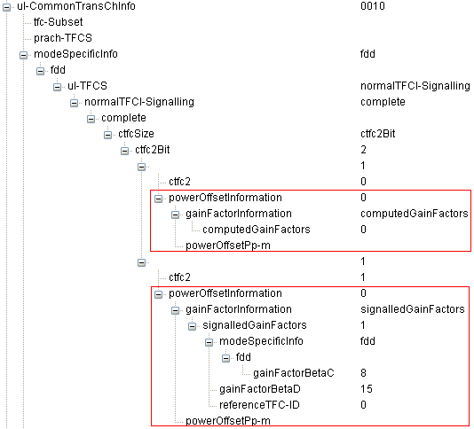
iv) UL E-DPCCH Power is adjusted based on UL DPCCH Power.
v) UL E-DPDCH Power is adjused based on UL E-DPCCH Power. (The offset between E-DPDCH and E-DPCCH is defined by RRC message as follows).
vi) Now the remaining channel is HS-DPCCH. This channel power is also determined based on UL DPCCH according to following RRC Information elements.
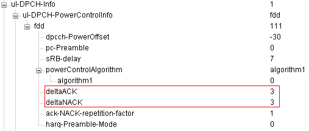
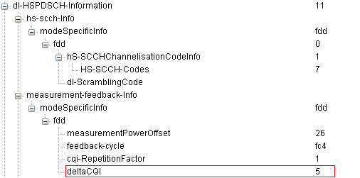
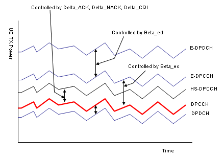
When on an HSPA connection, you must set UE Target Power as follows:
UE Target Power = ( Desired Total UE Power ) - ( Power Change Due to HS-DPCCH, E-DPCCH and E-DPDCH )
Where
Desired Total UE Power is the total output power level you desire from the UE, including DPCCH, DPDCH, HS-DPCCH, E-DPCCH and E-DPDCH.
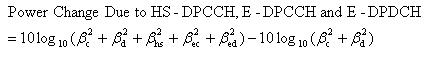